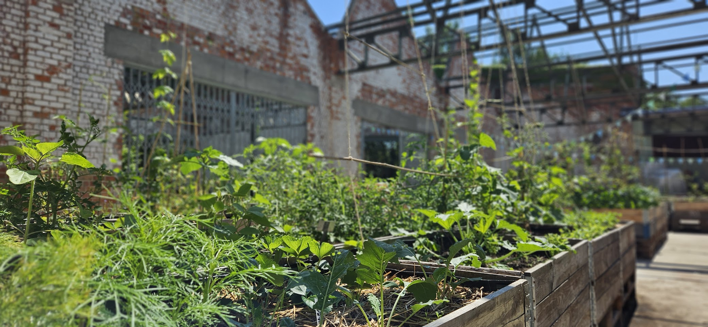
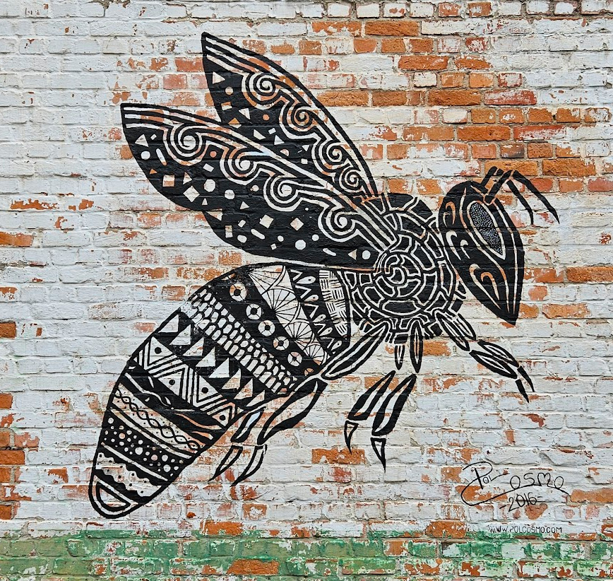
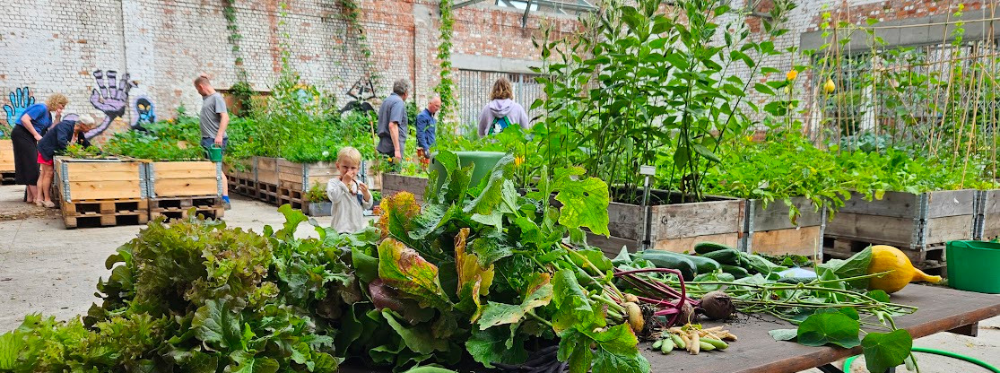
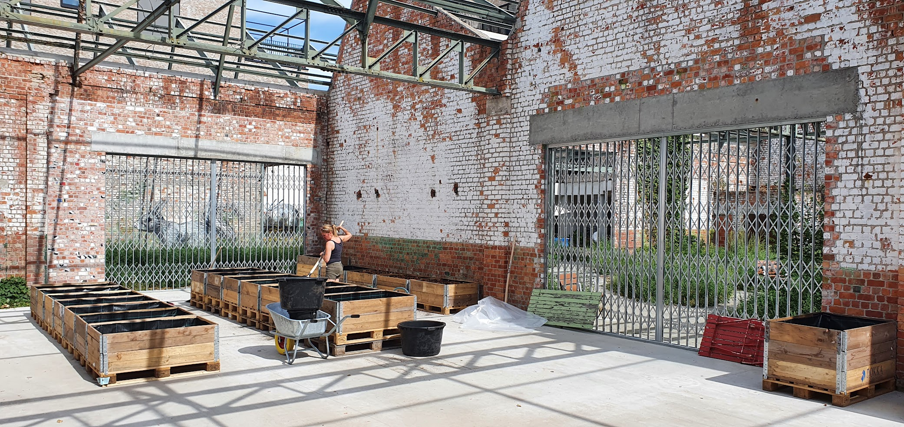
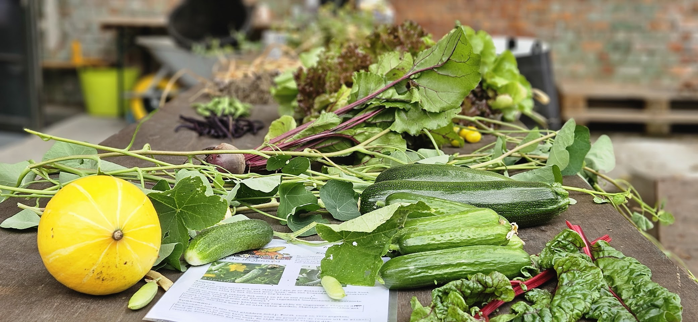
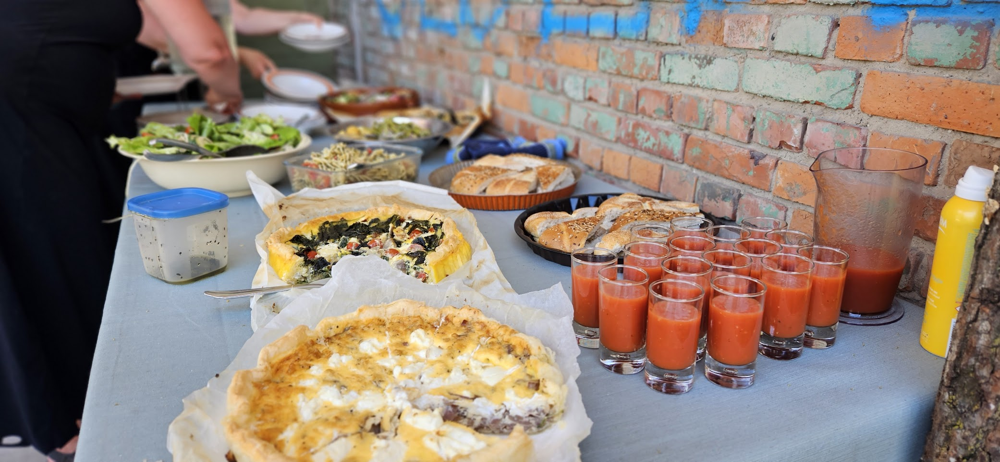
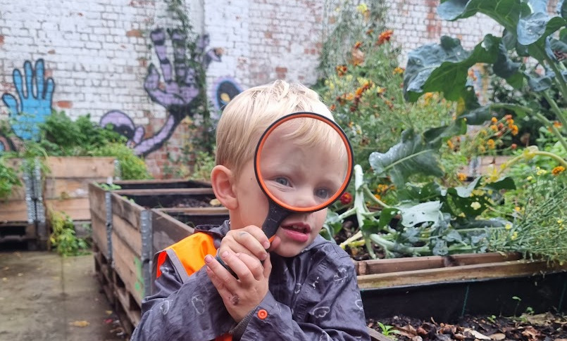

Hoe het begon
In 2016 nam een groep geëngageerde buurtbewoners het initiatief om op deze plek, verscholen binnen de muren van de dakloze oude fabriek, een ecologische buurtmoestuin en ontmoetingsplek te creëren: Samentuin De Bijgaard.

Samen tuinieren in een paradijs

Samentuin De Bijgaard streeft ernaar om een weelderig moestuin-paradijs te creëren, waar mensen samen kunnen werken en leren tuinieren, maar ook even op adem kunnen komen en genieten van de rust en het groen. Een plek waar buren elkaar ongedwongen kunnen ontmoeten, en wroeten en telen in gedeelde moestuinbakken.
Elke zondagvoormiddag tuinieren we samen. Bij ons zijn er geen individuele groentenbakken te vinden, en ook de geoogste kruiden, groenten en fruit worden volgens de noden van dat moment verdeeld. Heb je zin om mee te doen? Meld je dan aan als lid, of contacteer ons via de gegevens onderaan.
Moestuin De Bijgaard bevindt zich op een stukje Gent met een rijke geschiedenis. Van de 13de tot de 16de eeuw bevond zich op deze plek de ‘bijgaard‘ van de Sint-Baafsabdij, een boomgaard waarin bijen voor kostbare honing zorgden. In de hoogdagen van de Gentse textielindustrie (19de - 20ste eeuw) kwam er de weverij-spinnerij Baertsoen & Buysse, die zich toen uitstrekte over het huidige winkelcentrum tot aan de Nijverheidsstraat. Daarna vestigde Malmar zich er, een kopergieterij die later evolueerde naar metaalverwerking. Eind de jaren ‘90 kocht stad Gent de grond, en kende de site een grondige make-over: aanleg van het Bijgaardepark, tuinuitbreidingen, en de herbestemming van het voormalige stationsgebouw tot kinderdagverblijf De Bijendans. Later volgden dan het collectief woonproject Bijgaardehof en de park-uitbreiding waar de moestuin zich nu bevindt.

In 2016 nam een groep geëngageerde buurtbewoners het initiatief om op deze plek, verscholen binnen de muren van de dakloze oude fabriek, een ecologische buurtmoestuin en ontmoetingsplek te creëren: Samentuin De Bijgaard.

Tijdens de werken voor de park uitbreiding en cohousing Bijgaardehof lag de moestuin werking even stil, en kreeg het moestuin gedeelte zelf ook een upgrade, met een nieuwe vloerplaat, dak, en toegangspoorten.

Dankzij ondersteuning van Wijkbudget Gent konden de activiteiten in 2022 weer opgestart worden. De groep enthousiaste vrijwilligers breidde uit en de moestuin en haar bakken kreeg meer en meer vorm. Met in 2023 al een eerste mooie, diverse oogst als kers op de taart.
Naast tuinieren wil De Bijgaard ook voor verbinding in de buurt zorgen.

We organiseren laagdrempelige activiteiten voor, door en met de buurt. Houd zeker onze Facebook-pagina en instagram-account in de gaten, we plaatsen er regelmatig leuke updates en info over onze activiteiten.

De Bijgaard biedt ook een educatief programma aan voor scholen en andere organisaties. We werken op maat van de doelgroep. Voor meer info kan je ons bereiken via onderstaand contactformulier.
Heb je zelf nog ideeën voor activiteiten? Aarzel dan niet om ons te contacteren.
Zit je met vragen over het lidmaatschap? Bruis je van de ideeën voor een leuke activiteit? Of wil je gewoon iets anders delen? Laat het ons weten via een mailtje naar bijgaard.moestuin@gmail.com.